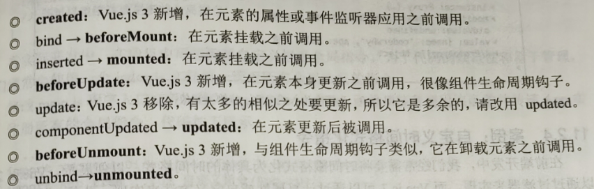

render 函数
通常使用模板创建 HTML 布局。然而，在某些特殊场景下，需要在 JavaScript 中创建 HTML 布局。为此，Vue3 提供了渲染函数(render 函数),
实际上，之前在模板中编写的 HTML 最终也会通过渲染函数生成对应的 VNode。如果想充分利用 JavaScript 编程的灵活性，那么可以在 render 函数中使用 createVNode 函数生成的对应的 VNode。多个 VNode 组合在一起，就形成了一棵树形结构，即虚拟 DOM。
认识 h 函数
Vue3 将 createVNode 函数简化为 h 函数，所以 h 函数是一个用于创建 VNode 的函数，它包含三个参数：
参数一(必需): 可以接收一个 HTML 标签名、组件、异步组件或函数式组件。支持类型:
{ String | Object | Function } tag。参数二(可选): 一个与 attribute、prop 和事件相对应的对象，会在模板中用到。支持类型:
{ Object } props。参数三(可选): 接收子 VNodes，使用 h 函数构建，也可以使用字符串获取 “文本 VNode” 或有插槽的对象，支持类型：
（ String | Array | Object）children。
需要注意的是，如果没有参数二 (props),那么通常可以将 children 作为参数二传入。为了避免产生歧义，可以将 null 作为参数二传入，将 children 作为参数三传入。
h 函数的基本使用
h 函数可以在 render 函数和 setup 函数中使用。
<script>
import { h } from "vue";
export default {
render() {
// 在 render 函数中使用 h 函数
// 下面等价于：<h4 class="title">我是标题</h4>
return h("h4", { class: "title" }, "我是标题");
},
};
</script>
可以看到，上面的代码没有使用 <template>，而是直接在 render 函数中使用了 h 函数构建 VNode 节点。
打开浏览器，页面依然可以正常展示 h4 元素。
h 函数也可以在 setup 函数中使用,
<script>
import { h } from "vue";
export default {
setup() {
// 在 setup 函数中使用 h 函数，return 需要返回一个函数
return () => h("h4", { class: "title" }, "我是标题");
},
};
</script>
render 函数实现计数器
import { h } from "vue";
export default {
data() {
return {
counter: 0,
};
},
render() {
return h("div", {
class: "render-counter",
[
h("h4", null, `当前计数: ${this.counter}`),
h("button", {
onClick: () => this.counter++,
}, "+1"),
h("button", {
onClick: () => this.counter--,
}, "-1")
]
});
},
};
在 render 函数中也可以直接通过 this 访问到组件的实例
setup 函数实现计数器
import { h, ref } from "vue";
export default {
setup() {
const counter = ref(0);
return h("div", {
class: "app",
[
h("h4", null, `当前计数: ${counter.value}`),
h("button", {
onClick: () => counter.value++,
}, "+1"),
h("button", {
onClick: () => counter.value--,
}, "-1")
]
});
},
};
在 render 中实现插槽
在使用 render 函数构建页面时，如果组件中需要添加插槽，那么可以使用 this.$slots 来实现。
// HelloWorld.vue
import { h } from "vue";
export default {
render() {
return h("div", { class: "hello-world" }, [
h("h4", null, "Hello World"),
this.$slots.default
? this.$slots.default({ name: "coderwhy" })
: h("span", null, "我是插槽默认值"),
]);
},
};
可以看到，在 render 函数中使用 this.$slots.default 判断父组件是否传递了 default 默认插槽函数。
如果有传递，那么调用 default 默认插槽函数，并传递一个对象给该函数作为参数
如果父组件没有传递 default 默认插槽函数，那么使用插槽的默认值，即显示一个 span 元素。
// RenderSlot.vue
import { h } from "vue";
import HelloWorld from "./HelloWorld.vue";
export default {
render() {
return h("div", { class: "render-slot" }, [
// h 函数中第一个参数是组件
h(HelloWorld, null, {
default: (props) => {
return h("span", null, `我是父组件传递的插槽值: ${props.name}`);
},
}),
]);
},
};
然后，为该组件传递 default 默认插槽函数，该函数返回的内容会替换掉 HelloWorld.vue 组件中定义的默认插槽，该函数的 props 参数中可以接收 HelloWorld.vue 组件中的插槽传递过来的参数。
组件的 JSX 语法
虽然可以使用 h 函数构建组件的布局，但是其编写效率非常低，并且不利于阅读和后期维护。
为了解决这个问题，Vue3 支持使用 JSX 语法编写组件，该语法更接近于模板语法。JSX 语法实际上是一种允许在 JavaScript 中编写 HTML 元素的语法糖。为了将 JSX 语法编写的模板转换成 h 函数的写法，Vue3 底层需要借助 Babel 插件 @vue/babel-plugin-jsx。该插件已经被集成并安装在 Vue CLI 脚手架中，因此可以在 Vue3 的单文件组件中直接编写 JSX 语法。
// App.vue
export default {
data() {
return {
counter: 0
}
},
render() {
const increment = () => {
this.counter++;
}
const decrement = () => {
this.counter--;
}
return (
<div class="app">
<h4>当前计数: {this.counter}</h4>
<button onClick={increment}>+1</button>
<button onClick={decrement}>-1</button>
</div>
)
}
}
JSX 语法不仅支持编写 HTML 元素，还支持编写 Vue.js 组件。
// HelloWorld.vue
export default {
render() {
return (
<div style="border: 1px solid #ddd; margin: 10px">
<div>HelloWorld 组件</div>
{this.$slots.default ? (
this.$slots.default()
) : (
<span>我是插槽默认值</span>
)}
</div>
);
},
};
使用上面定义的组件
// App.vue
import HelloWorld from "../components/HelloWorld";
export default {
// ...
render() {
// ...
return (
<div class="app">
<HelloWorld />
</div>
)
}
}
自定义指令
在 Vue3 的模板语法中,我们学习过各种各样的指令，比如 v-show、v-for 和 v-model 等除了使用这些内置指令，Vue3 也允许我们自定义指令。
自定义指令分为以下两种:
(1) 自定义局部指令: 在组件中通过 directives 选项定义，局部指令只能在当前组件中使用。
(2) 自定义全局指令: 使用 app 的 directive 方法定义，全局指令可以在任意组件中使用。需要注意的是，Vue3 的代码复用和抽象主要是通过组件实现的。在某些情况下，比如对 HTML 元素进行底层操作时，才会用到自定义指令。
自定义指令的基本使用
下面通过自定义一个 v-focus 指令来演示自定义指令的基本使用。v-focus 指令的作用是: 当某个元素挂载完成后，可以自动获取焦点。
为了更好地理解自定义指令，我们将通过三种方式实现该功能。
(1) 默认方式
(2) 自定义一个 v-focus 局部指令
(3) 自定义一个 v-focus 全局指令
1. 默认方式
<!-- DefaultImp.vue -->
<template>
<div style="border: 1px solid #ddd; margin: 10px">
<input ref="input" type="text" />
</div>
</template>
<script>
import { ref, onMounted } from "vue";
export default {
setup() {
const input = ref(null);
onMounted(() => {
input.value.focus(); // 默认方式：当挂载完成后，自动获取焦点
});
return {
input,
};
},
};
</script>
默认方式不利于代码的复用，比如其他组件或页面也需要用到该功能时，就需要多次编写代码。当需要获取 DOM，并对 DOM 进行一些特殊操作时，我们就可以使用自定义指令来封装。
2. 自定义一个 v-focus 局部指令
<!-- CustomLocalDirective.vue -->
<template>
<div style="border: 1px solid #ddd; margin: 10px">
<input type="text" v-focus />
</div>
</template>
<script>
export default {
directives: {
focus: {
// 自定义指令的生命周期 mounted
mounted(el, bindings, vnode, prevVnode) {
el.focus(); // el 是 input 元素对象
},
},
},
};
</script>
自定义指令的生命周期有: mounted、updated、unmounted。
3. 自定义一个 v-focus 全局指令
在 main.js 文件中，使用 APP 实例自定义全局指令，
// ...
let app = createApp(App);
// 1. 自定义 v-focus 全局指令，该指令可以全局使用
app.directive("focus", {
mounted(el, bindings, vnode, prevVnode) {
el.focus();
},
});
app.mount("#app");
自定义指令的生命周期函数
和组件一样，自定义指令也是有生命周期函数的，
Vue3 提供了以下生命周期函数:
created: 在绑定元素的属性或事件监听器被应用之前调用
beforeMount: 当指令第一次绑定到元素并且在挂载父组件之前调用
mounted: 在绑定元素的父组件被挂载后调用
beforeUpdate:在更新包含组件的 VNode 之前调用
updated: 在包含组件的 VNode 及其子组件的 VNode 更新后调用
beforeUnmount: 在卸载绑定元素的父组件之前调用
unmounted: 当指令与元素解除绑定且父组件已卸载时，只调用一次。
<!-- DirectiveLifeCycle.vue -->
<template>
<div style="border: 1px solid #ddd; margin: 10px">
<button v-why v-if="counter < 2" @click="increment">
当前计数: {{ counter }}
</button>
</div>
</template>
<script>
import { ref } from "vue";
export default {
directives: {
why: {
created(el, bindings, vnode, prevVnode) {
console.log("created");
},
beforeMount(el, bindings, vnode, prevVnode) {
console.log("beforeMount");
},
mounted(el, bindings, vnode, prevVnode) {
console.log("mounted");
},
beforeUpdate(el, bindings, vnode, prevVnode) {
console.log("beforeUpdate");
},
updated(el, bindings, vnode, prevVnode) {
console.log("updated");
},
beforeUnmount(el, bindings, vnode, prevVnode) {
console.log("beforeUnmount");
},
unmounted(el, bindings, vnode, prevVnode) {
console.log("unmounted");
},
},
},
setup() {
const counter = ref(0);
const increment = () => {
counter.value++;
};
return {
counter,
increment,
};
},
};
</script>
在刷新页面时，回调 created、beforeMount、mounted 生命周期函数。当单击 “当前计数” 按钮触发更新后，回调 beforeUpdate、updated 生命周期函数。如果再次单击 “当前计数” 按钮，v-if 为 false，那么<button> 元素会被卸载,时会回调 beforeUnmount、unmounted 生命周期数。
注意: Vue 2 和 Vue3 自定义指令生命周期函数是不同的，下面加粗的部分属于 Vue3 的生命周期函数。
自定义指令的参数和修饰符
在 Vue3 中，部分内置指令支持接收参数、修饰符和值，例如 v-on:click.once="doThis" 其中，click 为参数、.once 为修饰符、doThis 为值。当然，自定义指令同样支持接收参数、修饰符和值。
<template>
<button v-why:info.aaa.bbb="{name: 'coderwhy', age: 18}">
指令的参数和修饰符
</button>
</template>
<script>
export default {
directives: {
why: {
mounted(el, bindings, vnode, prevVnode) {
console.log(bindings.value); // {name: 'coderwhy', age: 18}
console.log(bindings.arg); // info
console.log(bindings.modifiers); // {aaa: true, bbb: true}
},
},
},
};
</script>
案例: 自定义时间格式化指令
新建目录：
|-- src
|-- directives
|-- format-time.js
|-- index.js
// format-time.js
import dayjs from "dayjs";
export default function (app) {
app.directive("format-time", {
created(el, bindings) {
bindings.formatString = "YYYY-MM-DD HH:mm:ss"; // 1. 初始化默认格式
if (bindings.value) {
bindings.formatString = bindings.value; // 2. 如果用户传递了格式，那么使用用户传递的格式
}
},
mounted(el, bindings) {
const textContext = el.textContent;
let timestamp = parseInt(textContext);
if (textContext.length === 10) {
timestamp = timestamp * 1000;
}
el.textContent = dayjs(timestamp).format(bindings.formatString);
},
});
}
// index.js
import formatTime from "./format-time";
export default function (app) {
formatTime(app);
}
// main.js
import { createApp } from "vue";
import App from "./App.vue";
import registerDirectives from "./directives/index";
let app = createApp(App);
// 全局注册
registerDirectives(app);
app.mount("#app");
在组件中使用指令
<template>
<h4 v-format-time="'YYYY/MM/DD'">{{ timestamp }}</h4>
</template>
teleport 内置组件
认识 teleport 组件
在组件化开发中，如果我们封装了一个组件 A，接着在组件 B 中使用组件 A，那么组件 A template 上的元素就会被挂载到组 B template 上的某个位置。最终，应用程序会形成一个 DOM 树结构。
但是在某些情况下，我们希望组件不被挂载到这个组件树上，而是被移动到 Vue3 的 app 以外的位置。比如移动到 body 元素上，或除<div id="app">之外的元素上。在开发过程中有一个非常常见的场景，例如，创建一个全屏模式的模态框组件，并挂载到 body 上，这时就可以通过<teleport>内置组件来完成。
<teleport> 是 Vue3 提供的内置组件。teleport 是 “心灵传输、远距离运输” 的意思。类似于 React 中的 Portals，<teleport> 有 to 和 disabled 两个属性。
to: 指定将其中的内容挂载到的目标元素，可以使用选择器，例如
to="#why"。disabled: 是否禁用 teleport 的功能。
teleport 的基本使用
<!-- App.vue -->
<template>
<div class="app">
<teleport to="body">
<h4>H4 挂载到 body 上，而不是 id=app 的 div 上</h4>
</teleport>
</div>
</template>
teleport 中嵌套组件
在 <teleport> 内置组件中，除了可以编写 HTML 元素，还可以使用其他的组件，并且可以向这些组件传递数据。
<!-- HelloWorld.vue -->
<template>
<div class="hello-world">
<h4>HelloWorld</h4>
</div>
</template>
<!-- App.vue -->
<template>
<div class="app">
<teleport to="body">
<h4>H4 挂载到 body 上，而不是 id=app 的 div 上</h4>
<HelloWorld />
</teleport>
</div>
</template>
多个 teleport 组件的使用
如果将多个 <teleport> 应用到同一个目标元素上(to 值相同)，那么应用到目标上的内容会进行合并。例如，对于上面的案例，我们可以拆分成两个<teleport>，效果也是一样的，
<template>
<div class="app">
<teleport to="body">
<h4>H4 挂载到 body 上，而不是 id=app 的 div 上</h4>
</teleport>
<teleport to="body">
<HelloWorld />
</teleport>
</div>
</template>
Vue3 插件开发
认识 Vue3 插件
插件（Plugin）是一种为 Vue3 添加全局功能的工具代码。Vue3 插件没有严格定义他用范围，但是插件的应用场景主要包括以下 4 种:
通过 app.component 和 app.directive 注册一个或多个全局组件或自定义指令
通过 app.provide 将一个资源注入整个应用
向 app.config.globalProperties 中添加一些全局实例属性或方法
一个可能包含上述三种功能的功能库，例如 Vue Router。
在编写 Vue3 插件时，通常有以下两种编写方式:
对象类型: 一个对象，必须包含一个 install 函数，该函数会在安装插件时执行
函数类型: 一个 function 函数，该函数会在安装插件时自动执行
对象类型的插件
新建目录
|-- src
|-- plugins
|-- plugins_object.js
|-- plugins_function.js
// plugins_object.js
export default {
// 必须包含一个 install 函数
install(app) {
// 插件的作用是为App 实例添加一个全局属性$name
app.config.globalProperties.$name = "coderwhy";
},
};
可以看到，该对象类型插件首先导出一个必须包含一个 install 函数的对象，该函数会在 app.use 安装插件时执行。
修改 main.js 文件，安装该插件:
// main.js
import pluginObject from "./plugins/plugins_object"; // 导入插件 object
import App from "./App.vue";
let app = createApp(App);
app.use(pluginObject); // 安装插件时，会执行插件的 install 函数
app.mount("#app");
下面使用该插件：
<!-- App.vue -->
<template>
<div class="app">App 组件</div>
</template>
<script>
import { getCurrentInstance } from "vue";
export default {
setup() {
const instance = getCurrentInstance(); // 获取组件实例，相当于 this
// 通过组件实例访问全局属性 $name
console.log(instance.appContext.config.globalProperties.$name);
},
mounted() {
console.log(this.$name); // 通过 this 访问全局属性 $name
};
}
</script>
可以看到，首先在 setup 函数中，通过调用 getCurrentInstance API 访问内部组件实例。因为在 setup 函数中不能使用 this 获取组件实例。
函数类型的插件
// plugins_function.js
export default function (app) {
// 插件的作用是为App 实例添加一个全局属性$name
app.config.globalProperties.$name = "coderwhy";
// 可以继续为 App 实例添加全局属性、方法、指令、组件、mixin 等
}
nextTick 函数的原理
nextTick 函数用于等待下一次 DOM 更新刷新，它可以将回调推迟到下一个 DOM 更新周期之后执行。
因为在 vue3 中更改响应式状态时，最终的 DOM 更新并不是同步生效的，是由 vue3 将它们缓存在一个队列中，直到下一个 tick 才一起执行。
nextTick 的作用是确每个组件无论发生多少状态改变，都仅执行一次更新。
下面通过一个案例来讲解 nextTick 的使用和原理，该案例的功能如下：
页面上有一个
<h4>元素和一个<button>元素。单击
<button>按钮，修改<h4>元素显示的 message，并重新获取<h4>元素的高度，
我们将使用三种方式渐进式地实现上述案例：
在单击按钮后立即获取
<h4>元素的高度(错误)。在 onUpdated 生命周期函数中获取
<h4>的高度，但是如果其他数据被更新，也会执行该操作(不推荐)。使用 nextTick 函数(正确)。
1. 在单击按钮后立即获取 h4 元素的高度
<template>
<div class="app">
<h4 style="width: 80px" ref="titleRef">{{ message }}</h4>
<button @click="addMessageContent">添加内容</button>
</div>
</template>
<script>
import { ref, onUpdated } from "vue";
export default {
setup() {
const titleRef = ref(null);
const message = ref("");
const addMessageContent = () => {
message.value += "更新 DOM";
// 1. 单击按钮修改 h4 元素内容后，立即获取高度
console.log("获取到h4元素的高度:", titleRef.value.offsetHeight);
};
return {
titleRef,
message,
addMessageContent,
};
},
};
</script>
最终结果：获取 h4 高度为 0，说明在 DOM 更新之前就执行了打印语句，所以这种方式获取不到高度数据。
2. 在 onUpdated 生命周期函数中获取 h4 元素的高度
<template>
<div class="app">
<div>计数器: {{ counter }}</div>
<button @click="increment">+1</button>
<h4 style="width: 80px" ref="titleRef">{{ message }}</h4>
<button @click="addMessageContent">添加内容</button>
</div>
</template>
<script>
import { ref, onUpdated } from "vue";
export default {
setup() {
const titleRef = ref(null);
const message = ref("");
const counter = ref(0);
const addMessageContent = () => {
message.value += "更新 DOM";
};
const increment = () => {
counter.value++;
};
onUpdated(() => {
console.log("onUpdated 生命周期函数中获取 h4 元素的高度");
console.log("获取到h4元素的高度:", titleRef.value.offsetHeight);
});
return {
titleRef,
message,
counter,
addMessageContent,
increment,
};
},
};
</script>
可以看到，单击 “添加内容” 按钮后获取<h4>元素的高度为 22，但是当单击 “+1” 按钮时，发现<div>更新了，这又会触发一次打印。这次打印并不是我们所期望的，
为了实现仅当<h4>元素 DOM 发生更新时，才获取该元素的高度，需要使用第三种方式
import { ref, nextTick } from "vue";
export default {
setup() {
const titleRef = ref(null);
const message = ref("");
const counter = ref(0);
const addMessageContent = () => {
message.value += "更新 DOM";
// 引入nextTick API，在 DOM 更新之后回调该函数
nextTick(() => {
console.log("获取到h4元素的高度:", titleRef.value.offsetHeight);
});
};
const increment = () => {
counter.value++;
};
return {
titleRef,
message,
counter,
addMessageContent,
increment,
};
},
};
下面分析 nextTick 函数的实现原理:
首先介绍浏览器的事件循环。浏览器在执行 JavaScript 代码时，如遇到 DOM 事件、setTimeout 函数、异步操作等回调函数，那么这些函数会被加入事件队列。浏览器的事件循环事实上维护着以下两个队列。
宏任务队列: 存放 ajax、setTimeout、setInterval、DOM 监听、UI Rendering 等任务。
微任务队列: 存放 Promise then 回调、Mutation ObserverAPI、queueMicrotask 等任务。
需要注意的是，浏览器在执行任何一个宏任务之前，都会先查看微任务队列中是否有需要执行的任务。如有，则优先执行微任务队列的任务。也就是说，在宏任务执行之前，必须保证微任务队列是空的，如果不为空，就优先执行微任务队列中的任务(这里的 “任务” 指的是回调函数)。
下面以上述案例为例，分析 nextTick 函数的原理:
当单击 “添加内容” 按钮时，会触发一个 DOM 监听事件，该事件的回调函数将会被加入宏任务队列。当该任务在调用栈执行时，会修改 message 中的 value。由于修改了 message，因此 Vue3 框架内部会将有关的 watch 回调函数、组件更新的回调函数和生命周期的回调函数加入微任务队列中。
当我们调用 nextTick 函数时，nextTick 内部会使用 Promise 包裹回调函数，目的是将该回调函数加入微任务队列。队列中的任务都是先进先出的，所以当执行完 watch 回调函数、组件更新的回调函数和生命周期的回调函数之后，就会执行 nextTick 的回调函数。这个过程就称为一次 tick。
因此，在上述案例中，nextTick 函数的回调函数将会推迟到下一个 DOM 更新周期之后执行。